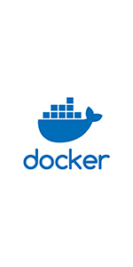
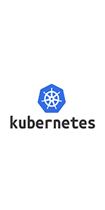
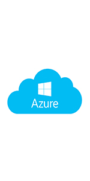
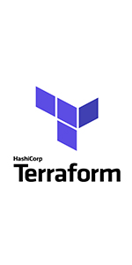

- 
- 
- 
- 
Certified in Big data analytics by Dell EMC
Completed my Bachelor’s degree in Information Technology from JNTUH. I was on the organising committee for cultural events and I hosted our college’s annual day event from my freshman to junior year. I started volunteering at AIESEC (an international student run organization) and worked for the outgoing exchange program. Started a business venture with a close friend and launched a startup that connected consumers with pet items.
Certified in Azure Fundamentals AZ 900
Certified in Azure Fundamentals AZ 104
Enterprise modernization team supporting a fortune 500 US auto insurance provider
Certified in CompTIA Security+